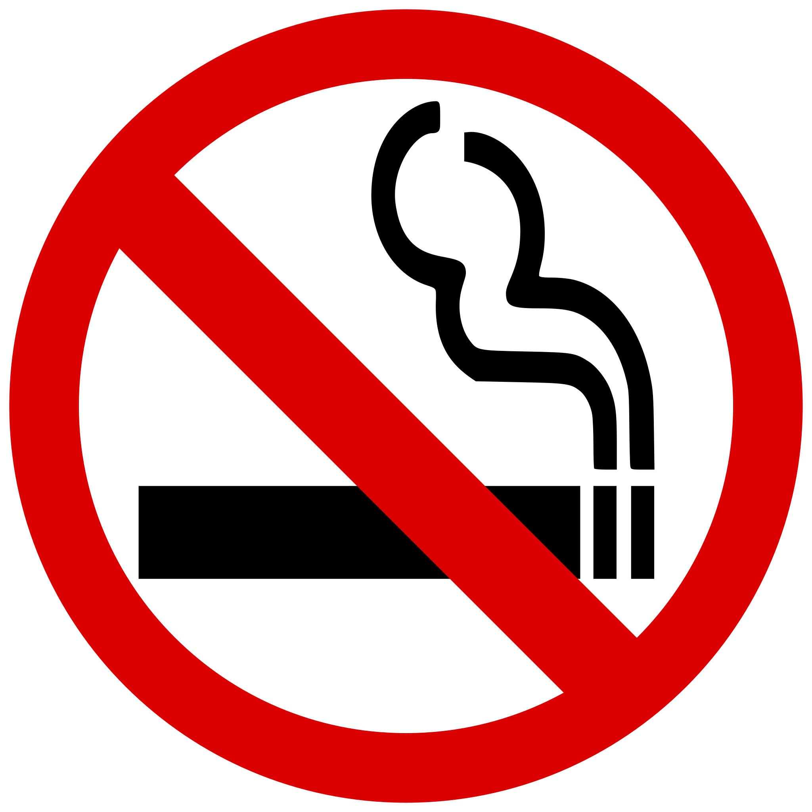

PREVENTING SMOKING ADDICTION FOR A SMOKE FREE GENERATION
Purpose - Raising awareness about tobacco smoking addiction and the harmful effects of smoking on an individual and society due to the release of toxic chemicals from tobacco smoke. It is a preventable behaviour and quitting is possible.
Objective - To improve public health by preventing smoking-related premature death, motivate people to quit smoking or not to start smoking in the first place, and contribute towards a smoke-free society.
Tobacco smoking is one of the largest preventable causes of death and diseases in Australia. Smoking rates in Australia have been declining over the years, but it still remains a significant public health issue.
Do you know
· One in ten adults were current daily smokers in 2021-22 (10.1%) shows that smoking is still prevalent.
· It is estimated that nearly 3200 kids and teens start smoking their first cigarette every day.
· The total cost of smoking in Australia on society is estimated to be around AUD 137 billion.
· Research shows that watching 5 minutes can help people to quit smoking if they are trying to quit but in a dilemma.
· If a person quits smoking today his body will start to recover within 20 minutes and in 15 years his body will be as good as a non-smoker.
Disclaimer - This project is created for educational purposes only. The information provided is based on the research and data collected from various websites. Effects of smoking and benefits of quitting smoking may vary depending on individual circumstances and their smoking behaviour. Timelines or outcomes mentioned are general observations. For SmokeQuit Calculator, the average amount of nicotine inhaled, and average cost of cigarette is considered. The results may vary depending on the brand, price or filter size of a cigarette.